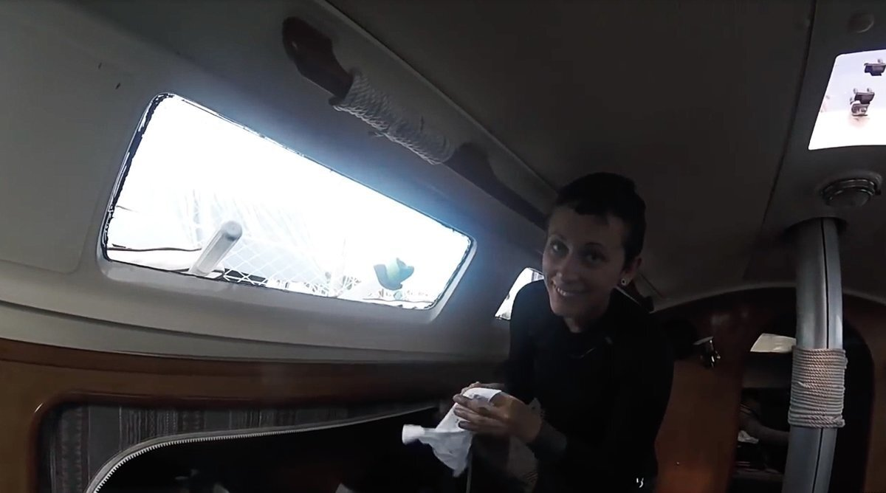

window replacement
2018.03.03
Whangarei, New Zealand
One of the scarier projects on our list was to replace our windows. Pino has 3 windows on each side, they have a lot of surface and have a bit of a bend to them. We had to do this right to avoid redos or potential leaks. People warned/lectured us about this. Whenever we mentioned to someone we were re-doing our windows, people always had something to say. Suddenly, everyone was an expert.
When it came time to start this dreaded project, our first decision was to cut the aft-most window of the boat in two, the longest of the three, with part of it overlapping a fibreglass backing. Our old windows both cracked in that place. The boat twists as you sail, and the adhesive contracts and expands with the heat and the cold, the sealant helps to cushion the motion.
Another big change we made was to make the windows thicker. The originals were 6 mm thick, and we increased it to 8 mm. Our thinking was that added thickness too, would add some strength. We cannot yet vouch for the quality of that decision, as we have not traveled with them long enough to ensure it was the best idea. More updates on that to come.
We intended to buy sheets of material to cut to size ourselves, but lacking space, tools and time, we decided to have the windows cut by Seamac, a shop in Whangarei specializing in windows. We visited the shop, got a quote, thought it to be reasonable, and so we went ahead with it. Unfortunately, the price went up considerably. More on that ahead.
We had no real technique for removing the windows. It's a shitty job that involves cutting the silicone sealant with a long blade, then, to pry the window from the seal with a lever, while cutting through the silicone with the blade as we went along. We read somewhere that using a wallpaper scraper as a lever works well.
We lacked patience, which resulted in the window cracking in many more places. Our windows had a LOT of sealant, making it extra difficult to remove. Our windows don't have an outer frame, or screws for support, the only thing holding them in place is the silicone adhesive.
Removing these windows took many hours, laid over many days. The weather was rarely on our side, and so we decided to only remove the starboard side windows, and to use these as a template for both sides. This turned out to be a mistake. The windows may look the same, but they aren't.
We had tarps taped up on the starboard side, to cover up the windows at night against both rain and insects. If we'd removed both sides at once, we think we would have had a hard time living in Pino, especially since the work spanned over 3 weeks, including the time it would take for Seamac to cut the windows.
Once we had the windows off, we taped up the broken pieces together, and brought them over to Seamac—already then, well aware that they wouldn't be able to use them as templates. They would have to re-draw new ones, adding to the production time and cost (and so begins the long line of added costs). We only have ourselves to blame for this, because we had little help and few resources.
The windows needed a black primer, applied to a band on the inside of the window, on the part that would be in contact with the sealant and the fibreglass. While protecting the silicone from the sun, the black primer makes for a nicer, cleaner finish. Seamac applied the primer for us, they also put a protective film over the surface of the acrylic in two layers, leaving one to protect the inside part of the window, to be removed last. The quote was 350$ initially, but in the end, it cost us about 1100$ for the material, cutting, black primer, 13 tubes of silicone sealant and templating.
In hindsight, we should have sought help for removing the windows. We wouldn't have required templates if we'd done it right, which would have reduced the costs significantly. We did have help for the second half of the project though, having a mentor helped us do it right.
While waiting for the acrylic to be ready, we scraped all of that black stuff off. It took ages to do it. We had razor-blade scrapers to take off the rough bits, then we sanded the edges by hand, and then borrowed a sander to smooth it off (while helping to create a rough surface for the sealant to adhere to). Once the surface was devoid of black stuff, many long hours and days later, we cleaned it with isopropyl alcohol. While giving the surface a good clean, isopropyl alcohol doesn't leave it wet, it evaporates quickly, which is essential for bonding.
Eventually, we received our windows, and the package of many, many, tubes of Fixsil FS200 silicone (black gooey stuff). Our windows are not fixed mechanically, all that is holding them in is the black stuff. Some other Yamahas add bolts, but we found that more often than not, their owners reported them leaking, because as we've said, the material twists, expands and contracts. Fixsil FS200 is a high-strength 100% silicone adhesive, it's UV and salt water resistant.
An essential part of adding windows without mechanical fixings, is to add spacers, at a size that matches your window's width, height and thickness. The sealant's technical spec sheet should be able to tell you the thickness required, all are different. The spacers we had were little rubbery bits, that we cut to size, and that we glued to the fibreglass with contact glue. We had planned to fibreglass them, but decided against it in the end.
We placed the spacers all around the area where the window would go, so that when we'd apply the sealant, and the window on top, that it would end up resting on the spacers and not push out too much glue while keeping it levelled at an even thickness all around. We also added spacers under the window to hold it up, to know exactly where it would go when it was time to put it on.
We then put the windows in place, without sealant, laying them against the spacers to see if they would hold, and to mark off the areas where we'd have to put tape. The tape ensures the sealant is applied cleanly. We made sure to add enough distance at the top of the window, to ensure the seal would have a good angle. If there is no angle in the seal at the top edge of the window, moisture will accumulate. We also added tape around the windows, from inside the boat as well as a 'bib' under each window, to catch any drippings, if any. All this preparation ensures that we'll be able to focus on applying the windows without worrying, without distraction. When you're doing something like this you want to focus on doing the work, not on catching drippings.
We prepared bits of wood that we'd lay outside of the windows to add pressure, a way of making sure that the acrylic stayed in place. We had bits of bamboo, and our dinghy oars, with one end covered with foam — as to not damage the window — and the other end would be wedged into the toe rail. The sealant we bought did say that we would have no need of any mechanical fixings to add pressure, that the sealant would be enough, but we preferred to do it all to ensure a good adhesion.
A hard thing about this project was to wait for the proper weather window to start. The weather needs to be very, very dry. If there's too much moisture in the air, it can reduce the adhesive properties of the sealant. This is difficult, because it rains a lot in Whangarei. The town lies in a depression, between mountains, making it very rain-prone.
Once we did find a day to start, came another problem, the acrylic windows had a thin plastic protective film over them. We removed the outer film, and with it, came the primer. The primer was sticking to the film. We called Seamac to tell them about this, they said it shouldn't do that, but it did. So we made the best of it. Before putting the windows on, we'd dip our finger in the black stuff and rub it over the parts of the window that had lost bits of primer. From an aesthetic point of view, it would help, although we could see a slight difference in blackness. It's really not a big deal, but when you've planned out every step to perfection, it sucks to have this happen. While no other will notice, this defect is very visible to us.
No matter. We pushed on.
Jim, our window mentor from the sailboat Bright Moments, came to help us apply the first window; he'd done this sort of work before and came at our request. His advice turned out to be extremely valuable, we couldn't have done it without him.
We cleaned the surface one last time with isopropyl alcohol, then, came time to open the first tube of sealant. We cut a deep 'V' shape at the end of the plastic nozzle with a blade, matching the thickness of the spacers (this is very, very important), and began to apply it to the fibreglass. Then, we ran over the gooey stuff with a flat tool to spread it well. In hindsight, we should have used a spread tool with little wide teeth, to create gaps, this too would help both sides to stick to each other. We went inside, while Jim and Devine were outside, and put the window in. We had tools at the ready, to 'tool' the sealant around the window, to produce a clean and even finish. We had lots of paper towels around, and trash bags to dispose of them. This was a dirty job, and with the sealant drying quickly, we couldn't waste time cleaning tools or worrying about it staining things in the boat.
Devine and Jim pushed onto the window from outside, pushing it flat against the spacers, with the bottom-edge laying over the bottom spacers. It was thus, perfectly positioned, with the black stuff oozing out of all sides. Then, they began to tool the area around the windows, removing the excess, and adding more sealant if any was missing. We kept a bowl with a mix of water and dishwashing liquid nearby, we used it to soak our finger to clean up the sealant, dipping it in the bowl of soapy water will stop the gooey black stuff from sticking. Inside, Rek too, was busy removing the excess sealant, and adding more as needed. Once we'd removed the excess sealant, and that all was clean and to our liking, we each removed the protective plastic from the acrylic. We couldn't wait too long to do this, because if the sealant dries, it'll start coming out in 'strings' and may damage all of our beautiful work.
We removed the film, and then the protective tape, and voila! Window number one was in! We applied mechanical fastenings, pushing the bits of bamboo onto the windows, and then turned to the second, and third window, repeating the same thing. We did it alone, it's dirty work and Jim had helped us enough! THANK YOU JIM :)!
We set plastic tarps back over all windows, to protect them from the weather and the sun, as directed by the sealant's information sheet. We left them covered for a few days. Pino had windows! We, and the elements, were separate again.
We repeated all of it for the port side windows, although, as we mentioned earlier, we made the mistake of using the same templates for both sides of the boat. Don't do that. The windows fit, that wasn't the problem, but the primer around the windows was not perfectly aligned to the fibreglass, which means the plastic film was tough to remove inside at times, caught between the fibreglass wall and the window, and that one of the windows has some primer visible from inside — not a big deal though, we can scratch that off easily. Not the worst mistake we've made. Still, not all windows are the same, something to remember for the future.
We also realized then, that our front starboard side window, wasn't a real window at all! It's laid onto a full fibreglass backing. How did we miss this? We laughed. They put a window there to make the design of the boat symmetrical, because the port side opened onto the head. If there had been a window on the starboard side, it would have opened onto a dark closet.
Take away: In doubt when doing a difficult project, seek help from others, don't hesitate to do that, it'll save you time and trouble down the line. Pick your weather, be patient and don't rush it, if you do it right you'll only need to do it once (until comes time to do it again, but that should be many more years later).
People will tell you how you should do things, that's okay, but when everyone starts to do it it can be a bit dizzying, and you might make a wrong decision. If you trust you've done your research, stick with it, you'll do well, just don't skip any steps. Always wait for the weather, don't try to finish things too quickly. Ask for help, we asked Jim because we knew he had just redone his windows recently, and because the techniques he used were the same as ours.
Ask questions when and if you can, a lot, about everything, especially in your newbies like us. Mistakes cost money, and when it comes to marine gear, that means a LOT.
Window cost 1300$